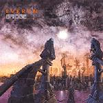

| Artist: | Everon |
| Title: | Bridge |
| Label: | Mascot Records M 7067 2 |
| Length(s): | 56 minutes |
| Year(s) of release: | 2002 |
| Month of review: | [06/2002] |
| 1) | Bridge - Theme | 1.55 |
| 2) | Across The Land | 4.07 |
| 3) | Juliet | 5.36 |
| 4) | Travelling Shoes | 1.50 |
| 5) | Driven | 4.49 |
| 6) | If You Were Still Mine | 5.31 |
| 7) | Ten Years Late | 4.15 |
| 8) | Not This Time | 6.46 |
| 9) | Puppet Show | 3.59 |
| 10) | Carousel | 5.11 |
| 11) | Harbour | 5.10 |
| 12) | Bridge | 6.28 |
We move right into Across The Land. This is typical Everon track, although the rhythm guitar seem a bit noisier than usual. Philipps is his usual self: plenty of vocals, but taking more rest than on the earlier albums, a bit of accent, but never problematic. The verses are okay, but not very distinctive, simply typically Everon. During the first chorus the rhythm guitars fall away leaving a very clean sound. The best part however is what we might call the bridge part, a bombastic, majestic passage with plenty of orchestral influences.
Juliet is a bit moody and percussive, with playful piano and the guitar wailing in the back already, because the song is not going on the end on a positive note (lyrically that is). I certainly do not hope this lyric was inspired by any personal memories. Juliet turns out to be quite a sadist, something that comes out in its menacing ending. This song is a bit better than the previous, both musically as well as in emotional impact. The style of heavy guitars, melodic vocals, and heavy orchestration (with washes of synth strings).
Travelling Shoes opens with light acoustics, this is a romantic, sweet ballad. Again, a chamber orchestra shines through on this rather sad short track.
Driven is one of the best songs on the album. At first it seems to continue the acoustic line of the album, the music rather light and accessible and although objectively one could consider the music on the melodramatic side I can not help being touched by it. The quieter verses are alternated with a rocking, desperate chorus, the song contains a third type of loud bombastic progressive metal.
Time for a little light music, with If You Were Still Mine. Light piano, a somewhat waltzy melody, but also a heavier chorus. Ten Years Late brings back the forceful side of Everon. I am not that happy with the rather straightforward first vocal melody, but when the guitars get heavier, the Arabic melody line interjects itself and we move through a breakful part, the Rush references of earlier return and the music becomes more interesting. Later, we get a turn for the orchestral, something that happens on this album a lot. I can't remember them doing this a lot on earlier albums. The guitar solo in the middle is quite a manic one.
Not This Time is with a little under 7 minutes the longest track on this album. The opening features low piano and intimate vocals. The melody is wonderful with again that orchestral feel (now subtle). Goosebumps material. Abruptly we move into a plodding part where the violins reign again, the piano dances through, the vocals carrying emotion. Another emotional highpoint, the highest so far, especially with the He Can't Break You at the end. Overpowering.
Puppet Show is Rush influenced instrumental with quite a bit of swing, fast and furious, bringing more progmetal into the music. Think Dream Theater here. On Carousel the lyrics abound, with plenty of organ behind all the violent guitars. Actually, at times this is rather an easy-going riff driven track, with a driven middle part.
Harbour is back to the ballad with some piano and sad melodies. This is something they are way better at than most progmetal acts. Later the music turns for the melodramatic making this a song that is best listened to with a lighter in your hand, burning.
Bridge is the final track with its soft keyboards in the back, and Depeche Mode like opening vocal parts with industrial effects. Then the song really bursts loose, introducing the now well known elements of Everon: high pitched guitar, emotional vocals, an orchestral bombastic feel.
I am not going to spoil the joke in the booklet following the lyrics to this song. Go and see for yourself.